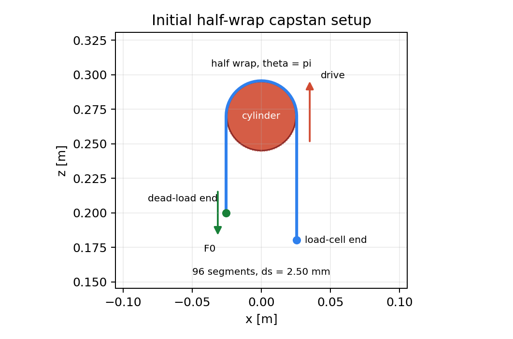
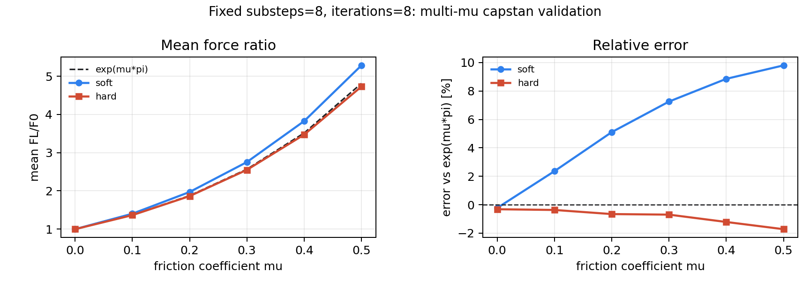
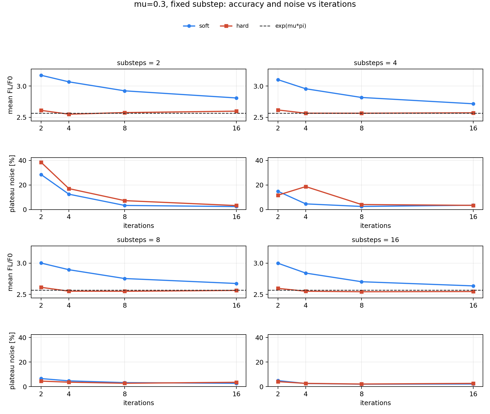
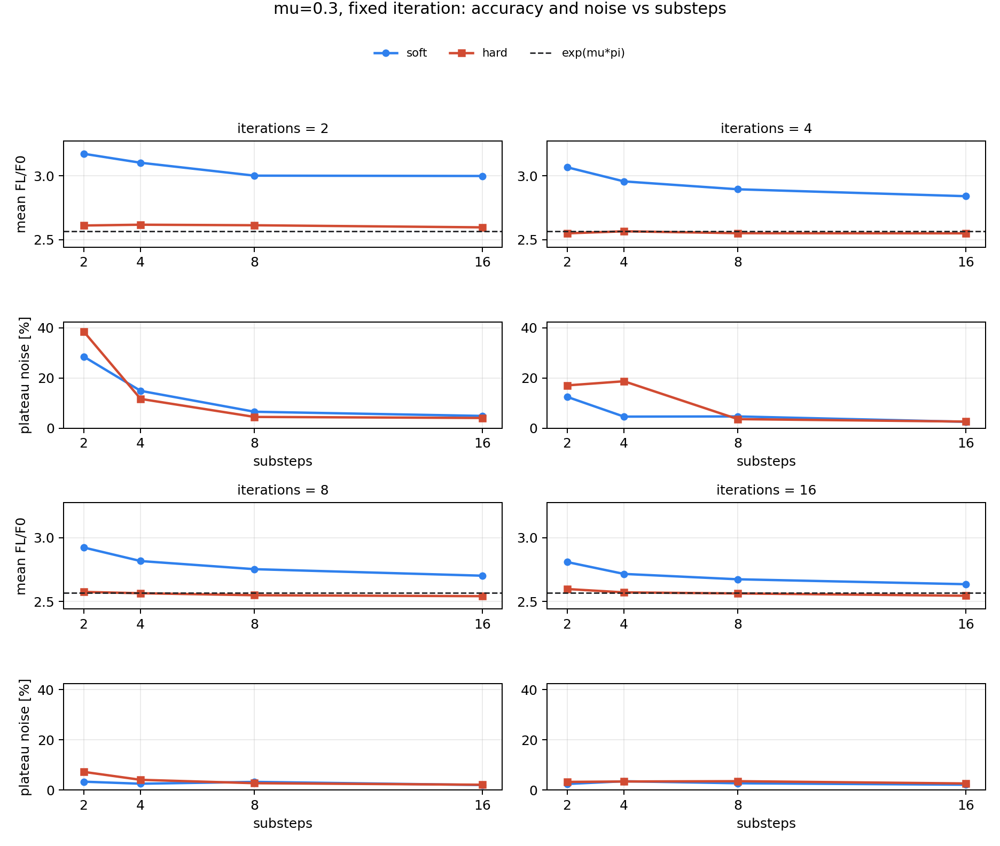
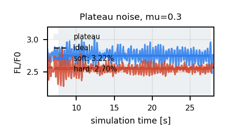

Setup
The cable is pulled over a half-wrap cylinder with bend stiffness set to zero.
The left side carries the known dead load F0; the right side is
the measured load-cell side FL.
The reported force ratio is averaged over the plateau window after the
cylinder has moved 10 to 40 mm.

Result
mu=0.0 to 0.5, the hard-contact sweep stays
within 1.72% of exp(mu*pi).
mu budget, the soft sweep grows to
+9.80% error at mu=0.5.
Comparison Videos
The primary comparison video is generated by running the validation
example itself in soft and hard contact modes.
soft and hard contact at
mu=0.3. The analytical target is
FL/F0 = exp(0.3*pi) = 2.5663.
Multi-Mu Validation
This sweep fixes substeps=8 and iterations=8, then
varies only the friction coefficient and contact mode.

Solver Budget
These sweeps use mu=0.3. The top rows show mean
FL/F0; the bottom rows show plateau noise,
std(FL/F0) / mean(FL/F0).


Plateau Trace
The plateau trace shows why the report tracks both mean force ratio and plateau noise: the averaged region is close to steady, but it is not a perfectly flat signal.
